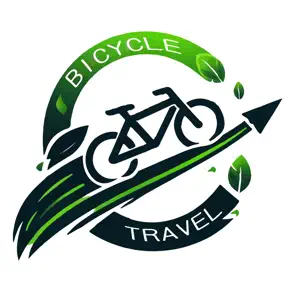

一騎出發吧｜街景騎乘模擬器V9.2
操作簡介：
- 🔽 路線下拉選單：從預設路線中選擇並多選站點
- 📝 貼上經緯度：自訂座標並繪製站點
- 📍 A → B 搜尋：輸入地址自動尋找點
- 以上任選一項完成後，點選"切換街景"開始模擬騎乘
- W / ↑：前進一段距離
- S / ↓：後退一段距離
- A / D：左右旋轉視角
- 滑鼠拖曳：旋轉街景視角
- 街景導航僅可依照規劃路線前進
📌 選擇輸入模式
🔽 路線下拉選單
📝 貼上經緯度
📍 A → B 搜尋
請選擇路線
全選
取消全選
規劃路線
繪製標記
搜尋路線標記
切換街景/地圖
開始自動導航